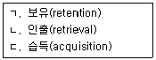
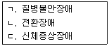
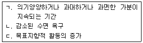
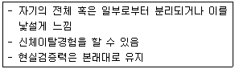
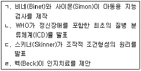
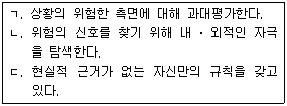
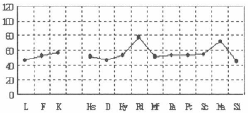
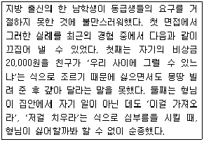
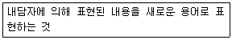

임상심리사-2급 (2017-08-26 기출문제)
1과목: 심리학개론
1. 실험법에 관한 설명으로 틀린 것은?
- 심리학이 과학적인 학문을 발전하는데 큰 기여를 했다.
- 다른 조건들을 일정하게 고정시키는 것을 통제라고 한다.
- 독립변인이 어떻게 결과에 영향을 미치는지를 알아보기 위한 조작을 처치라고 한다.
- 가외변인을 통제하기 어렵다는 문제점이 있다.
(정답률: 74%)

2. 동조에 관한 설명으로 옳은 것은?
- 집단의 크기에 비례하여 동조의 가능성이 증가한다.
- 과제가 쉬울수록 동조가 많이 일어난다.
- 개인이 집단에 매력을 느낄수록 동조하는 경향이 더 높다.
- 집단에 의해서 완정하게 수용 받고 있다고 느낄수록 동조하는 경향이 더 크다.
(정답률: 75%)
3. 초자아에 대한 설명으로 틀린 것은?
- 사회의 가치와 도덕에 관한 내면화된 표상이다.
- 부모가 주는 상과 처벌에 대한 반응에 의해 발달한다.
- 도덕성 원리에 의해 작용한다.
- 본질적으로 성격의 집행자이다.
(정답률: 82%)
4. 싫어하는 사람을 과도하게 친절하게 대하는 것은 어떤 방어기제인가?
- 승화
- 합리화
- 반동형성
- 전위
(정답률: 87%)
5. 여러 상이한 연령에 속하는 사람들로부터 동시에 어떤 특성에 대한 자료를 얻고, 그 결과를 연령 간 비교하여 발달적 변화과정을 추론하는 연구방법은?
- 종단적 연구방법
- 횡단적 연구방법
- 교차비료 연구방법
- 단기종단적 연구방법
(정답률: 75%)
6. 잔소리하는 어머니로부터 벗어나기 위해 집 밖에서 머무르는 시간이 증가하는 것은 조작적 조건형성에서 무엇에 해당되는가?
- 정적 강화
- 부적 강화
- 정적 처벌
- 부적 처벌
(정답률: 80%)
7. 실험법과 조사법의 가장 근본적인 차이점은?
- 실험실 안에서 연구를 수행하는지의 여부
- 연구자가 변인을 통제하는지의 여부
- 연구변인들의 수가 많은지의 여부
- 연구자나 연구참가자의 편파가 존재하는지의 여부
(정답률: 89%)
8. 성격 5요인 이론의 구성요소에 해당하는 것으로만 바르게 나열한 것은?
- 개방성(openness to experience), 성실성(conscientiousness), 민감성(sensitivity)
- 외향성(extraversion), 친화성(agreeableness), 성실성(conscientiousness)
- 친화성(agreeableness)，신경증성향(neuroticism), 강인성(hardiness)
- 개방성(openness to experience), 친화성(agreeableness), 충동성(impulsiveness)
(정답률: 65%)
9. 자신과 타인의 휴대폰 소리를 구별하거나 식용버섯과 독버섯을 구별하는 것은?
- 변별
- 일반화
- 행동조형
- 차별화
(정답률: 92%)
10. 기억 단계를 바르게 나열한 것은?

- ㄱ → ㄴ → ㄷ
- ㄷ → ㄱ → ㄴ
- ㄴ → ㄱ → ㄷ
- ㄱ → ㄷ → ㄴ
(정답률: 86%)
11. 검사의 내용이 측정하려는 속성과 일치하는지를 논리적으로 분석 ‧ 검토하여 결정하는 타당도는?
- 예언타당도
- 공존타당도
- 구성타당도
- 내용타당도
(정답률: 75%)
12. 집단사고가 일어나는 상황과 가장 거리가 먼 것은?
- 집단의 응집력이 높은 경우
- 집단이 외부 영향으로부터 고립된 경우
- 집단의 리더가 민주적인 경우
- 실행 가능한 대안이 부족하여 집단의 스트레스가 높은 경우
(정답률: 82%)
13. 성격이론가에 관한 설명으로 틀린 것은?
- Allport는 성격은 과거 경험에 의해 학습된 행동성향으로, 상황이 달라지면 행동성향도 변화한 다고 보았다.
- Cattell은 특질을 표면특질과 근원특질로 구분하고 자료의 통계분석에 근거하여 16개의 근원특질을 제시하였다.
- Rogers는 현실에 대한 주관적 해석 및 인간의 자기실현과 성장을 위한 욕구를 강조하였다.
- Freud는 본능적인 측면을 강조하고, 사회환경적 요인을 상대적으로 경시하였다.
(정답률: 74%)
14. 단기기억의 용량은?
- 5±2
- 6±2
- 7±2
- 8±2
(정답률: 82%)
15. 관찰법에 관한 설명으로 틀린 것은?
- 관찰법은 실험법과 같이 독립변인을 인위적으로 조작할 수 없으므로 관찰변인을 체계적으로 측정하지 않는다.
- 관찰법에는 직접 집단에 참여하여 그 집단 구성원과 같이 생활하면서 관찰하는 참여관찰도 있다.
- 관찰법은 임신 중 영양부족이 IQ에 미치는 영향과 같이 실험 상황을 윤리적으로 통제할 수 없을 때 사용한다.
- 관찰법에서는 관찰자의 편견이나 희망이 반영되어 관찰자 편향이 일어날 수 있다.
(정답률: 78%)
16. 개나리나 장미가 필 때는 그렇지 않고 유독 진달래가 필 때만 콧물이 나는 상황의 경우, 코감기의 원인이 진달래라고 결론을 내리는 것은?
- 동의성
- 효율성
- 일관성
- 독특성
(정답률: 74%)
17. 나중에 학습한 정보가 먼저 학습한 정보를 방해하여 회상을 어렵게 하는 현상은?
- 순행간섭
- 역행간섭
- 부식
- 소거
(정답률: 83%)
18. 한 번 도박에 빠지면 그만두기 어려운 이유를 학습원리로 가장 적절하게 설명한 것은?
- 너무나 큰 정적 강화를 제공하기 때문에
- 부분 강화 효과 때문에
- 보상에 비해 처벌이 적기 때문에
- 현실 도피라는 부적 강화를 제공하기 때문에
(정답률: 60%)
19. A씨의 아이는 항상 우유를 보고 물이라고 이야기 한다. Piaget에 따르면 A씨가 단어를 바로 잡아 준 후 아이의 우유에 대한 도식을 변환시키려면 무엇을 해야 하는가?
- 동화
- 보존
- 조절
- 대상영속성
(정답률: 83%)
20. 정상분포에 대한 설명으로 틀린 것은?
- 평균을 중심으로 좌우대칭을 이루는 곡선이다.
- 평균과 중앙값, 최빈값이 모두 같다.
- 정상분포를 따르는 변인은 Z점수 평균이 0 이고 변량은 1이다.
- 정상분포의 양끝 쪽은 점차 X축에 접근한다.
(정답률: 68%)
2과목: 이상심리학
21. 조현병의 음성증상이 아닌 것은?
- 감퇴된 정서표현
- 무의욕증
- 긴장성 경직
- 무쾌감증
(정답률: 82%)
22. DSM-5 신체증상 및 관련 장애에 속하는 장애를 모두 고른 것은?

- ㄱ, ㄴ
- ㄱ, ㄷ
- ㄴ, ㄷ
- ㄱ, ㄴ, ㄷ
(정답률: 73%)
23. 우울증의 원인에 관한 설명으로 틀린 것은?
- 생물학적 입장: 도파민의 과도한 활동 결과
- 정신분석이론: 자기를 향한 무의식적인 분노의 결과
- 행동주의이론: 정적 강화 감소의 결과
- 인지이론: 부정적이고 비관적인 생각의 결과
(정답률: 77%)
24. 조증 삽화와 경조증 삽화의 공통점을 모두 고른 것은?

- ㄱ, ㄴ
- ㄱ, ㄷ
- ㄴ, ㄷ
- ㄱ, ㄴ, ㄷ
(정답률: 38%)
25. 신경성 식욕부진증에 관한 설명으로 틀린 것은?
- 제한적 섭취로 인해 체중이 심각하게 줄어든다.
- 체중증가에 대한 극심한 두려움이 있다.
- 신체를 왜곡하여 지각한다.
- 신경성 폭식증보다 의학적 합병증이 적게 나타난다.
(정답률: 89%)
26. 조현병에 관한 설명으로 틀린 것은?
- 이란성 쌍생아가 일란성 보다 취약하다.
- 유병률은 인종과 민족에 따라 다르게 나타난다.
- 표출정서가 높은 가정이 낮은 가정에 비해 재발률이 높다.
- 가장 대표적인 생화학적 가설은 도파민 가설이다.
(정답률: 73%)
27. 파괴적, 충동조절 및 품행장애에 해당하지 않는 장애는?
- 적대적 반항장애
- 병적 방화
- 파괴적 기분조절불능 장애
- 간헐적 폭발장애
(정답률: 51%)
28. 편집성 성격장애의 행동 특성으로 가장 적합한 것은?
- 다른 사람이 자신을 이용하거나 피해를 입힌다고 생각한다.
- 단순히 아는 정도의 사람을 "매우 친한 친구"라고 지칭한다.
- 반복적으로 자살을 시도하거나 행동한다.
- 거의 어떤 활동에서도 즐거움을 느끼지 못한다.
(정답률: 82%)
29. 물질사용장애에 관한 설명으로 틀린 것은?
- 스트레스를 받는 사회경제적 조건 하에서 발생비율이 더 높다.
- 다른 사람들에 비해 의존성, 반사회성, 충동성이 더 높다.
- 물질사용이 보상을 줄 것이라는 기대감 때문에 사용이 증가한다.
- 보상결핍증후군과 가장 관련이 많은 신경전달물질은 세로토닌이다.
(정답률: 72%)
30. 성도착장애(paraphilias)에 관한 설명으로 틀린 것은?
- 물품음란장애(fetishistic disorder)는 여성보다 남성에게서 훨씬 더 많이 나타난다.
- 동성애(homosexuality)를 하위 진단으로 포함한다.
- 의상도착증(transvestism)은 강렬한 성적흥분을 위해 이성의 옷을 입는 것이다.
- 관음장애(voyeuristic disorder)는 대부분 15세 이전에 발견되며 지속되는 편이다.
(정답률: 82%)
31. 다음의 특징을 가진 DSM-5의 장애는?

- 심인성 둔주(psychogenic fugue)
- 해리성 정체감 장애(dissociative identity disorder)
- 이인증/비현실감 장애(depersonalization)
- 해리성 기억상실증(dissociative amnesia)
(정답률: 80%)
32. 다음 사건이 일어난 순서대로 바르게 나열한 것은?

- ㄱ → ㄴ → ㄷ → ㄹ
- ㄱ → ㄷ → ㄹ → ㄴ
- ㄴ → ㄱ → ㄷ → ㄹ
- ㄴ → ㄷ → ㄱ → ㄹ
(정답률: 60%)
33. DSM-5에서 조현성 성격장애의 특징이 아닌 것은?
- 거의 항상 혼자서 하는 활동을 선택한다.
- 기이하거나 편향된 행동을 보인다.
- 타인의 칭찬이나 비평에 무관심하다.
- 단조로운 정동의 표현을 보인다.
(정답률: 62%)
34. B군 성격장애에 해당하지 않는 것은?
- 경계성 성격장애
- 강박성 성격장애
- 반사회성 성격장애
- 연극성 성격장애
(정답률: 71%)
35. 급성 스트레스장애와 외상후스트레스 장애의 감별진단 기준으로 가장 중요한 것은?
- 기간
- 아동기 경험
- 사회적 지지
- 외상 심각도
(정답률: 75%)
36. 불안장애의 인지 특성을 모두 고른 것은?

- ㄱ, ㄴ
- ㄱ, ㄷ
- ㄴ, ㄷ
- ㄱ, ㄴ, ㄷ
(정답률: 62%)
37. 공황장애를 설명하는 인지적 관점에 의하면, 공황발작을 초래하는 핵심적 요인은?
- 신체 건강에 대한 걱정과 염려
- 만성 질병에 대한 잘못된 귀인
- 억압된 분노표출에 대한 두려움
- 신체 감각에 대한 파국적 오해석
(정답률: 78%)
38. 정신분석적 입장에서 강박장애와 밀접한 관련이 있는 방어기제가 아닌 것은?
- 투사(projection)
- 격리(isolation)
- 대치(displacement)
- 취소(undoing)
(정답률: 54%)
39. 알츠하이머병에 관한 설명으로 틀린 것은?
- 신경인지장애의 가장 흔한 유형이다.
- 조발성이 만발성보다 더 빈번하게 발병한다.
- 가장 현저한 인지기능 장해는 기억장해이다.
- 발병부터 사망까지 대개는 8〜10년이 걸린다.
(정답률: 71%)
40. 품행장애의 DSM-5 진단기준이 아닌 것은?
- 사람과 동물에 대한 공격성
- 타인의 재산 파괴
- 사기 또는 도둑질
- 학습문제
(정답률: 80%)
3과목: 심리검사
41. 웩슬러 지능검사 소검사를 범주화하는데 있어 ‘획득된 지식’ 요인에 속하는 소검사가 아닌 것은?
- 산수문제
- 상식문제
- 어휘문제
- 숫자문제
(정답률: 73%)
42. 웩슬러 지능검사를 실시한 결과는 지수점수(또는 지표점수)가 산출된다. 각 지수점수(지표점수)의 평균과 표준편차는?
- 평균은 90, 표준편차는 10 이다.
- 평균은 100, 표준편차는 15 이다.
- 평균은 90, 표준편차는 15 이다.
- 평균은 100, 표준편차는 10 이다.
(정답률: 73%)
43. 신경심리검사의 해석에 관한 설명으로 옳은 것은?
- 반응의 질적 측면은 해석에서 배제된다.
- 피검사자의 정서적 및 성격적 특징은 해석에서 고려되지 않는다.
- 과제에 접근하는 방식과 검사자와의 상호작용 양상도 해석적 자료가 된다.
- 과거의 기능에 관한 정보는 배제하고 현재의 기능에 초점을 맞추어 평가한다.
(정답률: 76%)
44. BGT(Bender Gestalt Test)의 장점에 관한 설명으로 틀린 것은?
- 피검사자의 뇌기능 장애 평가에 유용하다.
- 자기 자신을 과장되게 표현하려는 피검사자에게 유용하다.
- 적절하게 말할 수 있는 능력이 없거나 말할 수 있는 능력은 있으나 얘기를 하기 싫어할 때 유용하다.
- 피검사자가 말로 의사소통을 할 능력이 충분히 있더라도 언어적 행동으로 성격의 강점과 약점에 관한 정보를 얻기 힘들 때 유용하다.
(정답률: 65%)
45. 두정엽의 병변과 가장 관련이 있는 장애는?
- 구성 장애
- 시각양식의 장애
- 청각기능의 장애
- 고차적인 인지적 추론의 장애
(정답률: 59%)
46. 다음 MMPI 프로파일에 대한 해석으로 적합하지 않은 것은?

- 수동-공격성 프로파일로 볼 수 있다.
- 행동화 문제를 나타낼 가능성이 높다.
- 비순응적이고 반사회적인 경향이 높다.
- 대인관계가 피상적이고 이기적일 가능성이 높다.
(정답률: 70%)
47. 기억장애를 보이고 있는 환자에게 기억 및 학습능력을 평가하는데 가장 적합한 것은?
- K-WMS-IV
- SCL-90-R
- Face-Hand Test
- Trail Making Test
(정답률: 67%)
48. 지능검사 시행에 관한 설명으로 옳은 것은?
- 지능검사는 표준절차를 따르되 개인의 최대 능력을 측정하는 것을 목표로 한다.
- 지능검사 시행에서 수검자에 대한 행동 관찰은 별로 중요하지 않다.
- 지능검사 시행에서 검사에 대한 동기는 결과에 영향을 미치지 않는다.
- 검사가 시행되는 환경적 조건은 지능검사 결과에 별로 영향을 미치지 않는다.
(정답률: 87%)
49. 심리검사의 시행에 관한 설명으로 옳은 것은?
- 표준절차 외에 자신만의 효과적인 절차를 사용한다.
- 중립적 검사시행을 위해 라포 형성은 가급적 배제되어야 한다.
- 표준절차 외의 부가적 절차로 산출된 결과는 규준에 의거하여 해석하지 않는다.
- 검사를 자동화된 컴퓨터 검사로 전환한 경우 원 검사에 대한 전문적 훈련은 요구되지 않는다.
(정답률: 66%)
50. 다음 아동용 심리검사 중 실시 목적이 나머지 셋과 다른 것은?
- 운동성 가족화 검사(KFD)
- 아동용 주제통각검사(CAT)
- 집-나무-사람 그림 검사(HTP)
- 코너스 평정척도(Conners Rating Scale)
(정답률: 79%)
51. TAT(주제통각검사)에 관한 설명으로 틀린 것은?
- TAT 성인용 도판은 남성용, 여성용, 남녀 공용으로 나누어진다.
- TAT는 대인관계상의 역동적인 측면을 파악하는데 유용하다.
- TAT는 준거조율전략(criterion keying strategy)을 통해 개발되었다.
- TAT 반응은 순수한 지각반응이 아닌 개인의 선행경험과 공상적 체험이 혼합된 통각적 과정이다.
(정답률: 60%)
52. 모집단에서 규준집단을 표집하는 방법과 가장 거리가 먼 것은?
- 군집표집(cluster sampling)
- 유층표집(stratified sampling)
- 비율표집(ratio sampling)
- 단순무선표집(simple random sampling)
(정답률: 42%)
53. 집단용 지능검사의 특징으로 옳은 것은?
- 개인용 검사에 비해 임상적인 유용성이 높다.
- 선별검사(screening test)로 사용하기에 적합하다.
- 대규모 실시로 실시와 채점, 해석이 상대적으로 어렵다.
- 개인용 검사에 비해 지적 기능을 보다 신뢰성 있게 파악할 수 있다.
(정답률: 75%)
54. MMPI-2의 타당도 척도에 해당되지 않는 것은?
- S 척도
- D 척도
- F(b) 척도
- 무응답 척도
(정답률: 74%)
55. K-VMI-6(시각-운동 통합 검사)에 관한 설명으로 가장 적합한 것은?
- BGT에 비해 전반적으로 문항의 난이도가 높다.
- BGT에 비해 전반적으로 문항의 난이도가 낮다.
- 사용대상 연령은 만 2세~5세 까지로 대상 연령의 폭이 비교적 좁다.
- 만 2세에서부터 노인에 이르기까지 폭넓은 연령에서 실시할 수 있다.
(정답률: 66%)
56. 표집 시 남녀 비율을 정해놓고 표집 해야 하는 경우에 가장 적합한 방법은?
- 군집표집(duster sampling)
- 유층표집(stratified sampling)
- 체계적 표집(systematic sampling)
- 구체적 표집(specific sampling)
(정답률: 60%)
57. MMPI-2의 타당도 척도 중 비전형성을 측정하는 척도에서 증상타당성을 의미하는 척도는?
- TRIN
- FBS
- F(P)
- F
(정답률: 53%)
58. 적성검사에 대한 설명으로 틀린 것은?
- GATB는 대표적인 진로적성검사이다.
- 적성검사는 개인의 직업선택에도 활용된다.
- 적성과 지능은 측정하는 구성요인이 서로 겹치지 않는다.
- 적성검사는 하나의 검사로 다양한 능력 영역을 측정할 수 있는 이점이 있다.
(정답률: 77%)
59. 다음 중 지능에 관한 일반적인 정의와 가장 거리가 먼 것은?
- 지능이란 적응능력이다.
- 지능이란 학습능력이다.
- 지능이란 기억능력이다.
- 지능은 총합적 ‧ 전체적 능력이다.
(정답률: 57%)
60. MMPI 타당도 척도 중 L과 K 척도는 T점수로 50에서 60사이 이고 F척도는 70이상인 점수를 얻은 사람의 특징으로 적합한 것은?
- 지나친 방어적 태도 때문에 면담하기 어려운 사람이다.
- 감정을 억제하고 있으며, 행동을 적절하게 통제하고 있다.
- 경험하는 스트레스의 정도가 미미하며, 사회적 상황에 효율적으로 대처하는 사람이다.
- 자신의 문제를 인정하는 동시에 그런 문제와 관련하여 자신을 방어하려고 애쓰는 사람이다.
(정답률: 74%)
4과목: 임상심리학
61. 인지치료에 대한 설명으로 틀린 것은?
- 개인의 문제는 잘못된 전제나 가정에 바탕을 둔 현실 왜곡에서 비롯된다.
- 개인이 지닌 왜곡된 인지는 학습 상의 결함에 근거를 둔다.
- 부정적인 자기개념에서 비롯된 자동적 사고들은 대부분 합리적인 사고들이다.
- 치료자는 왜곡된 사고를 풀어 주고 보다 현실적인 방식들을 학습하도록 도와준다.
(정답률: 77%)
62. 치료자가 치료 초기에 rapport를 형성하기 위한 행동으로 바람직하지 않은 것은?
- 내담자를 가능한 한 인간으로 존중하려 했다.
- 너무 심문식으로 질문하지 않으려 했다.
- 치료시간을 넘기더라도 내담자가 충분히 이야기할 시간을 주었다.
- 내담자의 긴장을 풀어주기 위해 간단히 안부를 물었다.
(정답률: 81%)
63. 생명유지에 필수적인 기능에서 고차원적 인지 기능으로 발달하는 뇌의 발달 단계를 순서대로 나열한 것은?
- 후뇌(교와 소뇌) → 수뇌(연수) → 중뇌 → 간뇌 → 종뇌
- 수뇌(연수) → 후뇌(교와 소뇌) → 중뇌 → 간뇌 → 종뇌
- 후뇌(교와 소뇌) → 중뇌 → 간뇌 → 종뇌 → 수뇌(연수)
- 수뇌(연수) → 간뇌 → 후뇌(교와 소뇌) → 중뇌 → 종뇌
(정답률: 54%)
64. 치료관계에서 얻은 내담자의 정보에 대한 비밀 보장의 예외적인 경우에 해당하지 않는 것은?
- 자해의 위험성이 있는 경우
- 제3자에게 위해가 가해질 우려가 있는 경우
- 감염성 질병이 있는 경우
- 내담자에게 알리지 않고 내담자의 정보를 책에 인용한 경우
(정답률: 75%)
65. 신경심리학적 기능을 연구하는 방법 중 비침습적인 방법에 해당하는 것은?
- 양전자방출단층촬영(PET)
- 국부 대뇌 혈류(rCBF)
- 심전극(Depth electrode)
- 전자 뇌 지도(Electrical brain mapping)
(정답률: 60%)
66. 정신상태검사(mental status examination) 면접에서 환자를 통해 평가하는 항목이 아닌 것은?
- 외모와 태도
- 지남력
- 정서의 유형과 적절성
- 가족관계
(정답률: 62%)
67. 행동이 보상을 받아 행동의 빈도가 증가하는 원리에 해당되지 않는 것은?
- 칭찬하기
- 금전 제공
- 관심 철수
- 토큰 경제
(정답률: 83%)
68. 인간중심치료에서 자기와 경험 간의 일치를 촉진 시키고, 자기실현을 하도록 치료자가 지녀야 할 특성과 가장 거리가 먼 것은?
- 공감
- 진실성
- 객관적인 이해
- 무조건적 긍적적 존중
(정답률: 78%)
69. 암, 당뇨 등과 같은 질병을 진단받은 환자들을 위한 효과적인 집단개입으로 가장 적합한 것은?
- 정신역동적 집단치료
- 가족치료
- 인본주의적 집단치료
- 심리교육적 집단치료
(정답률: 76%)
70. 심리평가에 관한 설명과 가장 거리가 먼 것은?
- 심리평가는 심리학자들이 진단을 내리고, 치료를 계획하고, 행동을 예측하기 위하여 정보를 수집하고 평가하는 과정이다.
- 심리평가의 자료로는 환자에 대한 면접자료, 과거 기록, 행동관찰 사항, 심리검사에 관한 결과 들이 포함된다.
- 제 1, 2차 세계대전 당시 신병들에 대한 심리평가의 요구는 임상심리학에서 심리평가의 중요성과 심리검사 제작의 필요성을 촉진시켰다.
- 임상장면에서 심리검사를 실시할 때 자주 사용하는 MMPI, K-WAIS, Rorschach, TAT와 같은 검사들은 반드시 포함되어야 한다.
(정답률: 81%)
71. 환자가 처방한 대로 약을 잘 복용하고, 의사의 치료적 권고를 준수하게 하기 위한 가장 적절한 방법은?
- 준수하지 않을 때 불이익을 준다.
- 의사가 권위적이고 단호하게 지시한다.
- 모든 책임을 환자에게 위임한다.
- 치료자가 약의 효과 등에 대해 친절하고 상세하게 설명한다.
(정답률: 84%)
72. 알코올중독 환자에게 술을 마시면 구토를 유발하는 약을 투약하여 치료하는 기법은?
- 행동조성
- 혐오치료
- 자기표현훈련
- 이완훈련
(정답률: 75%)
73. 임상심리학자가 활동할 수 있는 새로운 영역과 가장 거리가 먼 것은?
- 법정 임상심리학
- 소아과 심리학
- 행동 의학
- 인지 심리학
(정답률: 53%)
74. 임상심리학자의 교육수련과 관련된 설명으로 적절하지 않은 것은?
- 1949년 Boulder회의에서 과학자-전문가 수련모형이 채택되었다.
- 과학자-전문가 모형은 과학적 연구자나 임상적 실무자 중 어느 하나의 역할에 충실할 것을 강조한다.
- 심리학 박사(Ph.D.)는 과학자-전문가 모형을 따른다.
- 한국심리학회에서는 자질 있는 임상심리학자를 양성하기 위하여 임상심리전문가 제도를 두고있다.
(정답률: 76%)
75. 심리치료 과정에서 저항이 일어나는 일반적인 이유와 가장 거리가 먼 것은?
- 환자가 변화를 원하더라도 환자의 삶에 중요한 영향을 미치는 타인들이 현 상태를 유지하도록 방해할 수 있기 때문이다.
- 부적응적 행동을 유지함으로써 얻는 이차적 이득을 환자가 포기하기 어렵기 때문이다.
- 익숙한 행동을 변화시키려는 시도가 환자에게 위협을 주기 때문이다.
- 치료자가 가진 가치나 태도가 환자에게 위협적이기 때문이다.
(정답률: 66%)
76. Pennsylvania 대학교에 첫 심리진료소를 개설하고 임상심리학의 탄생에 크게 기여한 학자는?
- William James
- Lightner Witmer
- Emil Kraepelin
- Wilhelm Wundt
(정답률: 68%)
77. MMPI-2에서 척도와 그 척도가 측정하는 바가 잘못 짝지어진 것은?
- L：지나치게 긍정적인 자기 보고
- F：자신의 문제들을 인정
- S：부정적 사고 및 태도 경향성
- K：자기 방어적 태도
(정답률: 59%)
78. 행동평가의 관한 설명으로 가장 적합한 것은?
- 자연적인 상황에서 실제 발생한 것만을 대상으로 평가한다.
- 행동표본은 내면심리를 반영한 것으로 해석된다.
- 특정 표적행동의 조작적 정의가 상이할 수 있음을 고려해야 한다.
- 관찰 결과는 요구특성이나 피험자의 반응성 요인과는 무관하다.
(정답률: 60%)
79. 역할시연과 가장 관련성이 높은 행동관찰 방법은?
- 자기-탐지
- 통제된 관찰
- 자연관찰
- 비구조화 관찰
(정답률: 58%)
80. 다음 중 유관학습의 가장 적합한 예는?
- 욕설을 하지 않게 하기 위해 욕을 할 때마다 화장실 청소하기
- 손톱 물어뜯기를 줄이기 위해 손톱에 쓴 약을 바르기
- 충격적 스트레스 사건이 떠오를 때 ‘그만!’이라는 구호 외치기
- 뱀에 대한 공포가 있는 사람에게 뱀을 만지는 사람의 영상 보여주기
(정답률: 54%)
5과목: 심리상담
81. Bordin이 제시한 작업동맹(working alliance)의 3가지 측면을 바르게 짝지은 것은?
- 작업의 동의, 진솔한 관계, 든든한 유대관계
- 진솔한 관계, 든든한 유대관계, 서로의 호감
- 유대, 작업의 동의, 목표에 대한 동의
- 서로의 호감도, 동맹, 작업에 대한 동의
(정답률: 61%)
82. 교류분석에서 치료의 바람직한 목표인 치유의 4단계에 해당되지 않는 것은?
- 계약의 설정
- 증상의 경감
- 전이의 치유
- 각본의 치유
(정답률: 40%)
83. 학교진로상담의 기본원리로 고려해야 할 사항이 아닌 것은?
- 최종 선택은 내담자 스스로 결정하도록 유도한다.
- 만성적 진로 미결정자를 조기에 발견할 수 있도록 해야 한다.
- 진로관련 정보제공을 위하여 상담자는 직업세계에 대한 정보를 숙지하는 것이 필요하다.
- 학생을 위한 집단학습의 경험을 제공한다.
(정답률: 65%)
84. 다음 사례에 가장 적합한 개입방법은?

- 분노조절훈련
- 체계적 둔감화 훈련
- 자기주장훈련
- 역설적 수용 훈련
(정답률: 81%)
85. 인지행동적 상담이론의 특징과 가장 거리가 먼 것은?
- 인지적 재구성에 초점을 둔 이론
- 선천적으로 진화적인 성장지향 접근
- 문제해결 및 대처기술 접근
- 기술에 대한 훈련을 강조하는 접근
(정답률: 69%)
86. 사별 경험이 있거나 자살을 시도하려는 아동의 상담에 관한 설명으로 틀린 것은?
- 상담자로서 잠재적 위험요인을 깨닫게 하기 위해 사용하는 가장 좋은 기법은 내담자의 대처방식을 관찰하는 것이다.
- 내담자와 자살금지 계약서를 작성할 때 시간제한을 명시한 동의보다 시간제한이 없는 동의를 하는 것이 효과적이다.
- 자살예방 프로그램을 실시하기 전에 학부모 및 주위 교사 등에게 예방전략의 중요성을 알려야 한다.
- 사별 경험을 한 아동 내담자를 돕기 위해 가장 중요한 일은 그들의 부모에게 아동을 이해하고 도와줄 수 있는 방법을 가르치는 것이다.
(정답률: 69%)
87. 장기간 사용 중이던 약물을 얼마 동안 사용하지 않았을 때 심리적으로 초조하고 불안함을 느낄 뿐 아니라 약물에 대한 열망과 메스꺼움 등의 신체적인 불쾌감을 경험하는 것은?
- 내성
- 금단증상
- 갈망증상
- 중독(intoxication)증상
(정답률: 84%)
88. 다음은 무엇에 대한 설명인가?

- 공감
- 경청
- 반영
- 수용
(정답률: 85%)
89. 아동청소년의 폭력비행을 상담할 때 부모를 통해 개입하는 방법으로 가장 적합한 것은?
- 자녀가 반사회적 행동을 하면 심하게 야단을 치게 한다.
- 친사회적인 행동을 보이면 일관되게 보상을 주도록 한다.
- 반사회적 행동을 보이면 무조건 무시로 대응한다.
- 폭력을 휘두를 때마다 자녀를 매로 다스리게 한다.
(정답률: 76%)
90. Rogers의 인간중심 상담이론의 기본 명제에 관한 설명으로 틀린 것은?
- 모든 개인은 본인이 중심이 되고 끊임없이 변화하는 경험의 세계에 존재한다.
- 유기체는 경험하고 지각하는 대로 장(field)에 반응한다.
- 행동이해를 위한 가장 좋은 관점은 개인의 외적 참조준거에서 나온다.
- 유기체에 의해 선택된 대부분의 행동방식은 자기개념과 일치하는 것이다.
(정답률: 68%)
91. 성피해자에 대한 상담의 초기 단계에서 상담자가 유의해야 할 사항으로 옳은 것은?
- 피해자가 첫면접에서 성 피해 사실을 부인할 경우 솔직한 개방을 하도록 지속적으로 유도한다.
- 가능하면 초기에 피해자의 가족상황과 성폭력 피해의 합병증 등에 관한 상세한 정보를 얻는다.
- 성피해로 인한 내담자의 심리적 외상을 신속하게 탐색하고 치유할 수 있도록 적극적으로 개입한다.
- 피해상황에 대한 상세한 정보 수집이 중요하므로 내담자가 불편감을 표현하더라도 상담자가 주도적으로 면접을 진행한다.
(정답률: 56%)
92. 현실치료의 근간이 되는 선택이론의 주요원칙으로 옳지 않은 것은?
- 모든 인간의 동기나 행동은 다섯가지 기본욕구인 생존 및 건강, 사랑과 소속, 자기가치감, 통제, 즐거움과 재미 등을 충족시키기 위해 고안된다.
- 다섯가지 욕구들을 모두 소유하고 있다고 하더라도 우리들은 각자가 모두 특별한 방법으로 그 욕구들을 충족시키려 한다.
- 사람들이 바람 또는 욕구와 그들의 환경에서 얻고 있는 지각 사이에 차이가 있을 때는 특별한 행동들이 유발된다.
- 자기 자신을 어떻게 지각하는가 뿐만 아니라 그들의 주변세계를 어떻게 지각하는지에 대해 그들의 현실세계와 자신을 보는 관점이 된다.
(정답률: 55%)
93. Kitchener가 상담의 기본적인 윤리적 원리를 제시한 것으로 상담자가 내담자와 맺은 약속을 잘 지키며 믿음과 신뢰를 주는 행동을 하는 것은?
- 자율성(autonomy)
- 무해성(beneficence)
- 충실성(fidelity)
- 공정성(justice/fairness)
(정답률: 75%)
94. 효율적인 독서능력의 신장과 장기기억을 돕는 조직화 전략 SQ3R의 순서를 올바르게 나열한 것은?
- 개관 - 질문 - 읽기 - 암송 - 복습
- 질문 - 개관 - 읽기 - 복습 - 암송
- 읽기 - 질문 - 개관 - 복습 - 암송
- 질문 - 개관 - 읽기 - 암송 - 복습
(정답률: 60%)
95. 상담 및 심리치료의 발달역사에 관한 설명으로 옳지 않은 것은?
- William Glasser는 1960년대에 현실치료를 제시하였다.
- 가족치료 및 체계치료는 1970년대부터 본격적으로 등장하였다.
- Rollo May와 Victor Franks 영향으로 게슈탈트 상담이 발전하였다.
- Witmer는 임상심리학이라는 용어를 최초로 사용했으며, 치료적 목적을 위해 심리학의 지식과 방법을 활용하였다.
(정답률: 66%)
96. 정신분석 상담에서 말하는 불안의 종류에 해당하는 것은?
- 구체적 불안
- 특성적 불안
- 도덕적 불안
- 실존적 불안
(정답률: 77%)
97. 상담 초기단계에서 내담자를 평가할 때 고려해야 할 사항이 아닌 것은?
- 지적인 기능과 사회경제적 조건
- 자살에 대한 생각, 의지, 충동성
- 변화실행과 관련된 내담자의 전략
- 자신의 문제에 관한 이해
(정답률: 64%)
98. 집단상담을 초기단계, 전환단계, 작업단계, 마무리단계로 구분할 때 전환단계의 특징이 아닌 것은?
- 환경이 얼마나 안전한지를 결정하기 위해 상담자나 다른 참가자들을 시험한다.
- 참가자들은 존경, 공감, 수용, 관심, 반응에 대한 기본적인 태도를 배운다.
- 주변에 남아 있을 것인지 아니면 위험에 뛰어들 것인지에 대해 생각한다.
- 다른 사람이 들을 수 있도록 자신을 표현하는 방법을 배운다.
(정답률: 49%)
99. 체계적 둔감법(systematic desensitization)의 기초가 되는 학습원리는?
- 혐오 조건형성
- 고전적 조건형성
- 조작적 조건형성
- 고차적 조건형성
(정답률: 72%)
100. 약물중독 개입모델 중 영적인 성장에 초점을 두고 자조집단을 활용하는 형식으로 진행되는 모델은?
- 12단계모델
- 동기강화모델
- 하위문화모델
- 공중보건모델
(정답률: 62%)